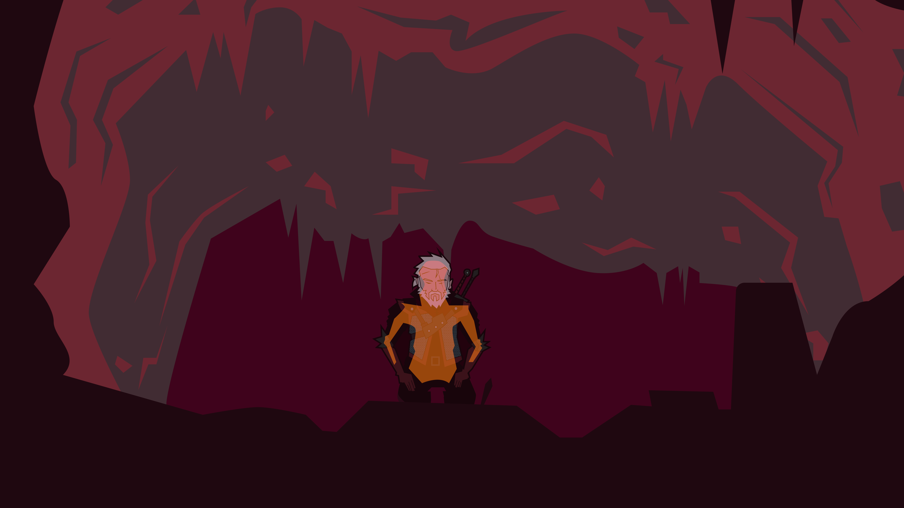
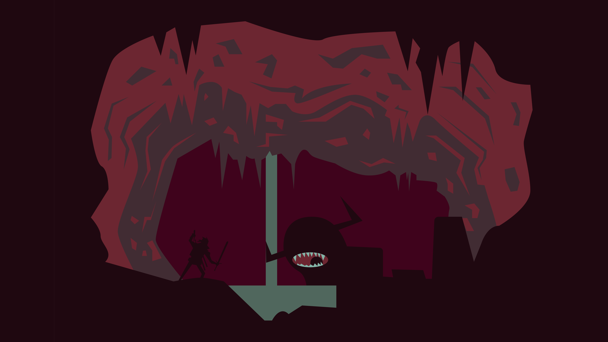
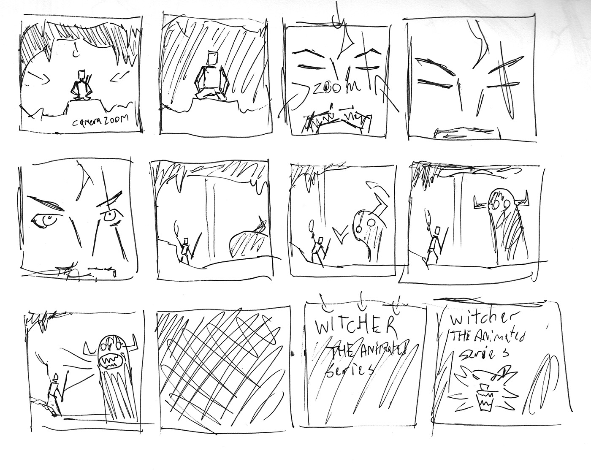

WITCHER THE ANIMATED SERIES
THE JOB
This was a Motion Graphics assignment for class. The goal was to create a parallax animation, a form of aniamtion where in background objects move to the give the illusion of depth. Presented below is the final video, along with my story boards and vector illustrations.
CHALLENGE
The concept began as two heroes going to hunt a monster, but that became to ambitious to complete in two weeks. It was scaled down to the heroes entering a cave and facing the monster. Eventually I turned to the popular polish series The Witcher for inspiration. Thats when the project found its theme. The final challenge was to tell a story and show my concept in 10 second or less.



